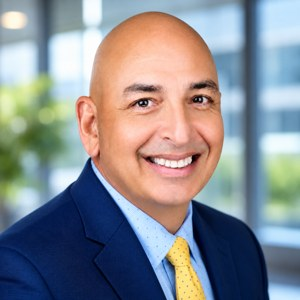

Michael C. Brauer

Chief Technology Officer | Chief Information Officer | AI, Fintech and Automated Trading Systems Leader
Naples, FL
Executive Summary
Technology executive with more than 20 years of experience building production grade fintech infrastructure at the highest levels of institutional finance. Currently serves as Chief Technology Officer of an investment management firm and Chief Information Officer of its proprietary trading arm. Designed and operated automated trading systems, order allocation engines and real time reporting infrastructure in a FINRA regulated environment. Recently deployed a Claude AI enterprise platform that eliminated more than 500 hours of annual manual processing across 5 departments. Began writing commercial software at age 13.
Core Competencies
- AI and LLM Platform Architecture
- Fintech and Regulated Systems
- Engineering Team Leadership
- MCP and API Integration
- Cybersecurity and Compliance
- Cloud and Infrastructure (Azure and AWS)
- Python and Automation Pipelines
- Automated Trading Systems
- Vendor and Budget Ownership
Professional Experience
Chief Technology Officer, Investment Management Firm
Naples, FL, 2004 to Present
Formerly the number one revenue generating subsidiary of Legg Mason. FINRA regulated. Technology executive leading a team of 2 to 5, responsible for reporting automation, the technology budget, infrastructure and the AI roadmap.
- Architected and automated the firm's entire reporting infrastructure, including quarterly client books distributed to 32,000+ contacts across 6,000+ clients at peak.
- Deployed a Claude AI (Anthropic) enterprise platform integrated with Microsoft 365, Egnyte, FactSet, HubSpot and SS&C Advent APX, automating workflows across 5 departments and eliminating 500+ hours of annual manual processing.
- Developed a Claude AI training program with role specific use case guides for research analysts, client services and operations.
- Managed the full technology stack: VMware virtualization, Azure cloud, SQL Server, SSRS reporting, IP camera and biometric security, VOIP, SOC 2 and FINRA compliance frameworks.
- Directed vendor relationships and a combined annual technology budget of about $2M across both firms.
Chief Information Officer, Proprietary Trading Firm
Naples, FL, 2004 to Present
Proprietary stock trading firm and execution arm of the investment management firm. CIO role held concurrently with the CTO position.
- Architected and implemented automated trading systems over a 20 year period across a full institutional technology stack: FIX protocol, Bloomberg Terminal, FactSet API, Charles River OMS, Advent Moxy, Advent APX, Tamarac/Envestnet and Black Diamond.
- Built trading metrics and order allocation reporting systems that give portfolio managers real time and historical performance visibility.
- Designed and maintained disaster recovery infrastructure, achieving 99.9% system uptime over 20+ years, including through hurricanes and major emergencies.
- Led cybersecurity strategy and incident response across both organizations.
- Currently deploying AI assisted research workflows that bring LLM tooling into the investment research process.
Head of Development and Report Writing, EDS (Electronic Data Systems)
Raleigh, NC, 2001 to 2004
Global IT services firm, acquired by HP. Led a team of about 10 developers and report writers delivering enterprise solutions for major clients.
- Served as lead developer for two major U.S. government clients: the U.S. Postal Service and the Bureau of Alcohol, Tobacco and Firearms.
- Engineered real time server outage monitoring and reporting systems for both agencies.
- Built call center metrics and performance reporting infrastructure with real time and historical analytics.
Earlier Career
- Application Design Analyst, Source Interlink Companies
- System Development Manager, System Integration Specialists
- Technology Director, TecAdept Consulting
- Consulting in the mid 1990s: designed a salary and bonus analysis automation system for Chase Manhattan Bank.
- Taught computer science courses at Hofstra University in the late 1990s.
Technical Skills
- AI and LLM: Claude AI (Anthropic), LLM API integration, MCP (Model Context Protocol), prompt engineering, workflow automation, RAG pipelines
- Languages: Python, VB/VBA/VB.NET, JavaScript, PHP, Java, C, C++, SQL, HTML/CSS, Go, Swift, PERL, COBOL, Assembler, FORTRAN
- Platforms: Azure, AWS, VMware, SQL Server, SSRS, Crystal Reports, Linux/Apache, MySQL, Office 365, Egnyte, SS&C Advent APX
- Security: Penetration testing, biometric/RFID systems, IP surveillance, incident response, FINRA compliance, SOC 2 alignment
- Trading Systems: FIX protocol, Bloomberg Terminal, FactSet API, Charles River OMS, Advent Moxy, Advent APX, Tamarac/Envestnet, Black Diamond
- Dev Tools: Flask, REST API development, Visual Studio 2022, Git, Python automation pipelines
Education
- M.S. Information Technology (in progress), Illinois Institute of Technology
- Computer Science and Engineering, 140 credit hours, Ohio State University
- Microsoft SQL Server Specialization, Jamaica High School IT Accelerator Program, Queens, NY
Publications and Thought Leadership
- AI Tools for Investment Professionals (KDP, ASIN B0H21ZC8DX), a 17 chapter trade paperback on AI integration for financial services practitioners.
- LinkedIn Author: "41 Years of Code" and "Why Financial Services Firms Are Getting AI Wrong"
Leadership and Community
- Boy Scouts of America, SW Florida District and Council. Volunteer roles included Day Camp Administrator, Range Master, Training Coordinator, Committee Chair and District Website Administrator.
- Coach, Naples Cal Ripken Baseball League
- Chapter Leader, Hugs Across America (Naples, FL)
Beyond Work
Away from the office, I am a proud parent and a loyal fan on the sidelines. Meet the athletes on the other two pages of this site:
Contact
- Website: mikebrauer.com
- LinkedIn: linkedin.com/in/michaelcbrauer